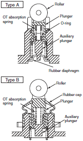
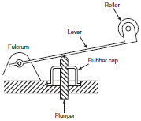
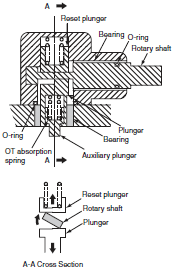
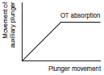
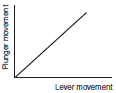
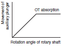
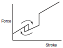
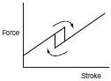
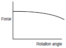

Limit Switches
Limit Switch are basic switches that have been encased to protect them from external forces, water, oil, and dirt. Many models are available, such as those resistant to head, cold, or corrosion, as well as high-precision models.
| Overview | Features |
| Principles | Classifications |
| Engineering Data |
|
[[Limit Switches]]
A Limit Switch is enclosed in a case to protect a built-in basic switch from external force, water, oil, gas, and dust. Limit Switches are made to be particularly suited for applications that require mechanical strength or environmental resistance.
The shapes of Limit Switches are broadly classified into Horizontal, Vertical, and Multiple Limit Switches. The structure of a typical vertical Limit Switch is shown in the following figure as an example. Limit Switches are generally composed of five components.
Drive Mechanism of Limit Switch
The drive mechanism of the Limit switch is an important part of the Limit Switch and is directly linked to seal performance and operating characteristics. Drive mechanisms are classified into three types, as shown in the following figure.
(1) Plunger
There are two types of plunger (types A and B in the figure) depending on the sealing method. With type A, an O-ring or a rubber diaphragm is used for sealing. The rubber seal is not externally exposed, and so resistance is provided against cutting debris from machine tools, but sand and fine shavings may become stuck on the sliding surface of the plunger. With type B, sand and fine shavings will not become stuck, and the sealing performance is superior to type A, but hot cutting debris striking the Switch may damage the rubber cap.
Whether type A or type B is required depends on the location in which the Switch is to be used.
With the plunger drive, the movement of the plunger piston enables air to be compressed and taken in.
Therefore, if the plunger is left pushed in for a long time, the air in the Limit Switch will escape and the internal pressure will become equivalent to atmospheric pressure. This will cause the plunger to tend to reset slowly even if an attempt is made to quickly reset it. To prevent this problem from occurring, design the system to limit the amount of air compressed by pushing in the plunger to 20% or less of the total air pressure in the Limit Switch. To extend the service life of the Limit switch, the plunger drive includes an OT absorption mechanism that absorbs the remaining plunger movement using an OT absorption spring and stops the movement of an auxiliary plunger that pushes the Built-in switch according to the movement of the plunger.
(2) Hinge Lever
The amount of plunger movement is increased at the end of the lever (i.e., roller) by the lever ratio, and so an absorption mechanism is generally not used.
(3) Roller Lever
The structure of the WL is shown as a typical example. Other drives include those in which the plunger performs the function of the reset plunger and those in which a coil spring is used for the reset force and a cam is used to move the auxiliary plunger.
| (1) Plunger | (2) Hinge Lever | (3) Roller Lever | |
| Drive mechanism of limit switch |  |  |  |
| Movement of auxiliary plunger |  |  |  |
| Force vs. stroke characteristic |  |  |  |
| Precision | High | Normal | Low to normal |
Switch Component Materials
The main parts of the Switch are formed from the following materials.
| Part | Material | Symbol | Characteristics |
| Contacts | Gold | Au | Gold is extremely resistant to corrosion and is used for microloads. It is soft (Vickers strength: HV25 to HV65), which easily results in adhesion (e.g., contacts sticking together) and the contacts are easily dented if the Contact force is large. |
| Gold-silver alloy | AuAg | This alloy of 90% Au and 10% Ag is extremely resistant to corrosion, and its hardness (HV30 to HV90) is higher than that of gold, and so it is often used in switches for microloads. | |
| Platinum-gold- silver alloy | PGS | This alloy of 69% Au, 25% Ag, and 6% Pt is extremely resistant to corrosion, its hardness (HV60) is similar to AuAg, and it is often used in switches for microloads. | |
| Silver- palladium alloy | AgPd | This alloy has good resistance against corrosion but it easily generates polymers if it adsorbs organic gases. With 50% Ag and 50% Pd, it has a hardness of HV100 to HV200. | |
| Silver | Ag | Silver has the highest rate of electrical conductivity and heat transfer among metals. It exhibits low Contact resistance, but has the disadvantage of easily generating a sulfide film in environments with sulfide gas, and so Contact faults easily occur in microload ranges. The hardness is HV25 to HV45. Silver is used in almost all switches for standard loads. | |
| Silver-nickel alloy | AgNi | With 90% Ag and 10% Ni, this alloy has electrical conductivity about equal to Ag, and it has excellent resistance to arcing and welding. The hardness is HV65 to HV115. | |
| Silver-indium- tin alloy | AgInSn | This alloy is very hard, has a high melting point, and exhibits excellent resistance to arcing, welding, and Contact transfer. | |
| Movable springs and armatures | Phosphor bronze for springs | C5210 | Phosphor bronze is very ductile and has resistance against fatigue and corrosion. It is annealed at low temperatures. The spring limit (Kb0.075) is somewhat low at 390 N/mm2 minimum for C5210-H and 460 N/mm2 minimum for C5210-EH, but it is often used for armatures of miniature basic switches. |
| Age-hardened copper beryllium for springs | C1700 C1720 | Copper beryllium is pressed and then age-hardened. It has a high rate of electrical conductivity, and the spring limit (Kb0.075) after age hardening is extremely high at 885 N/mm2 minimum. for C1700-H and 930 N/mm2 minimum for C1720-H. It is used for basic switches that require a high spring limit. | |
| Mill-hardened copper beryllium for springs | C1700-[]M C1720-[]M | This copper beryllium is age hardened by the materials manufacturer before shipment (i.e., mill hardened). Pressing after age hardening is not required. At 635 N/mm2 minimum (reference value) for C1700-HM and 635 N/mm2 for C1720-HM, the spring limit (Kb0.075) is higher than with bronze phosphor for springs. Mill-hardened copper beryllium is often used for the movable springs in basic switches. | |
| Stainless steel for springs (austenite) | SUS301-CSP SUS304-CSP | Austenite stainless steel has excellent resistance against corrosion. The spring limit (Kb0.075) is 490 N/mm2 minimum for SUS301-CSP-H and 390 N/mm2 for SUS304-CSP-H. | |
| Cases and covers | Phenol resin | PF | Phenol resin is heat hardened. It is often used as the material for the casings of basic switches. Phenol resin has a UL heat index of 150°C, a UL fire-retardant grade of at least 94V-1, and a water absorption coefficient of 0.1% to 0.3%. Material without ammonia is used for basic switches. |
| Polybutylene terephthalate resin | PBTP | This resin is thermoplastic. A glass-reinforced epoxy type of this resin is often used as the material for the casings of basic switches. The resin has a UL heat index of 130°C, a UL fire-retardant grade of at least 94V-1, and a water absorption coefficient of 0.07 to 0.1. | |
| Polyethylene terephthalate resin | PETP | This resin is thermoplastic. A glass-reinforced epoxy type of this resin is used as the material for the casings of basic switches. The resin has a UL heat index of 130°C, a UL fire-retardant grade of at least 94V-1, and a water absorption coefficient of 0.07 to 0.1. | |
| Polyamide (nylon) resin | PA | This resin is thermoplastic. A glass-reinforced epoxy type of this resin has heat resistance that is superior to PBT and PET. The absorption coefficient is large. Select a grade for use with a the lowest possible absorption rate. The resin has a UL heat index of 180°C, a UL fire-retardant grade of at least 94V-1, and a water absorption coefficient of 0.2 to 1.2. | |
| Polyphenylene sulfide | PPS | This resin is thermoplastic. It has heat resistance that is superior even to PA. The resin has a UL heat index of 200°C, a UL fire-retardant grade of at least 94V-1, and a water absorption coefficient of 0.1. | |
| Switch boxes | Aluminum (die-cast) | ADC | Aluminum is often used as the material for the switch box (case) of Limit Switches. Standards are specified in JIS H5302. |
| Zinc (die-cast) | ZDC | Die-cast zinc is more suitable than ADC for thin-walled objects, and its resistance to corrosion is also superior to ADC. Standards are specified in JIS H5301. | |
| Rubber seals | Nitrile- butadiene rubber | NBR | This rubber has excellent resistance to oil, and it is often used for Limit Switches. It is classified into five nitrile levels according to the amount of combined nitrile: Very high (43% or higher), high (36% to 42%), mid-high (31% to 35%), medium (25% to 30%), and low (24% or lower). Resistance to oil, heat, and cold somewhat vary with each level. The ambient operating temperature ranges from -40 to 130°C. |
| Silicon rubber | SIR | Silicon rubber has excellent resistance to heat and cold, and the ambient operating temperature ranges from -70 to 280°C. Its resistance to oil, however, is inferior. | |
| Fluorine rubber | FRM | Fluorine rubber has resistance to heat, cold, and oil that is superior even to NBR and SIR. Depending on the constituents of the oil, however, the oil resistance may be inferior to NBR. | |
| Chloroprene rubber | CR | Chloroprene rubber has good resistance against ozone and climatic conditions. It is often used as the material for basic switches that require resistance against climatic conditions. |